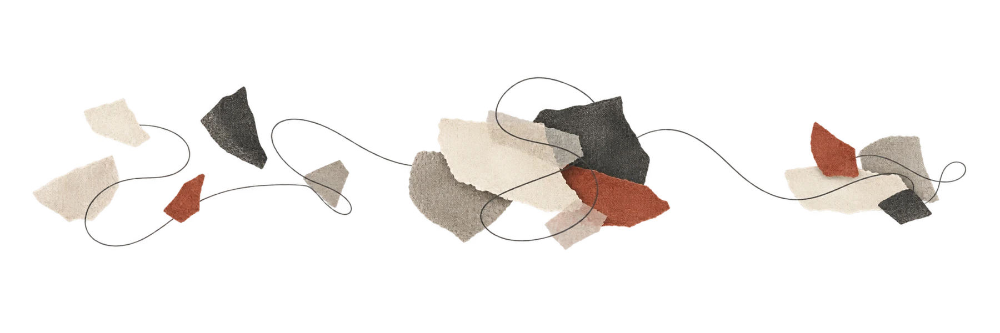
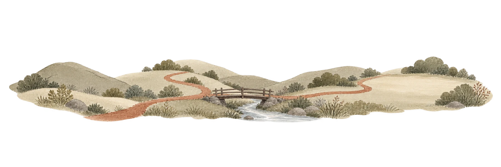
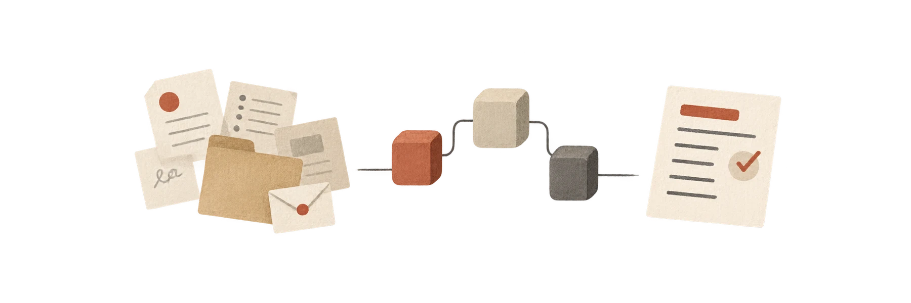

Give the work somewhere to start.
A first project gives us something concrete to learn from. Choose a useful goal, test the assumptions and build with your team.



Scope, fees & working together.
We discuss the outcome, the work involved and the level of support before agreeing an engagement. You can send an initial brief even if the scope is still taking shape.
A · Abstract editorial
Fragments and threads suggest making sense of complexity. The most abstract and graphic of the three.